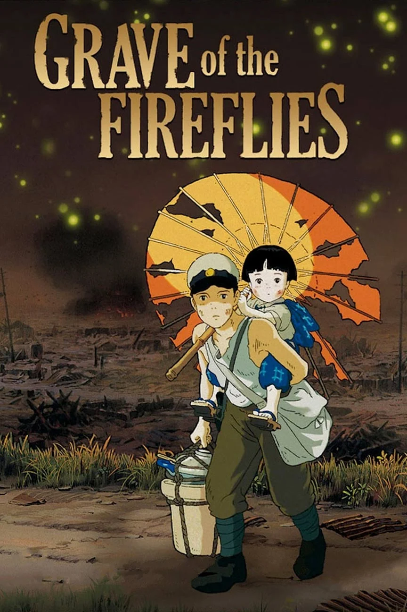

Grave of the fireflies

- Emotional Impact: "Grave of the Fireflies" is known for its emotional depth and ability to evoke strong feelings in its viewers. It tells the heartbreaking story of two siblings, Seita and Setsuko, struggling to survive in Japan during World War II. The film's portrayal of their suffering and the harsh realities of war is deeply moving and thought-provoking.
- Realism: The movie is praised for its realistic portrayal of wartime Japan. It doesn't shy away from depicting the hardships, hunger, and devastation faced by civilians during the conflict. This realism adds to the film's authenticity and emotional impact.
- Character Development: The film invests time in developing the characters of Seita and Setsuko, making the audience deeply empathize with their struggles. The bond between the two siblings is beautifully portrayed, making their journey all the more poignant.
- Artistic Merit: Studio Ghibli is known for its high-quality animation and attention to detail, and "Grave of the Fireflies" is no exception. The film's animation is visually stunning, and the artistry enhances the storytelling.
- Social Commentary: Beyond its emotional impact, the movie serves as a powerful social commentary on the consequences of war, the resilience of the human spirit, and the importance of family bonds. It encourages viewers to reflect on the tragedy of war and its impact on innocent lives.
- Timelessness: "Grave of the Fireflies" remains relevant and timeless, as it explores themes that transcend its historical setting. It continues to resonate with audiences of all ages and backgrounds.
The prestige

- Complex Narrative: The film weaves a complex and intricate narrative that keeps viewers engaged and guessing throughout. It involves two rival magicians, played by Hugh Jackman and Christian Bale, who engage in a fierce competition to create the ultimate illusion. The movie's nonlinear storytelling adds layers of mystery and intrigue.
- Themes of Obsession: "The Prestige" explores themes of obsession, sacrifice, and the price of success. The characters' relentless pursuit of perfection in their magic tricks leads to personal and moral dilemmas, making for a compelling exploration of the human psyche.
- Outstanding Performances: The film features strong performances from its cast, including Hugh Jackman, Christian Bale, and Michael Caine. These talented actors bring depth and complexity to their roles, making the characters relatable and intriguing.
- Cinematic Craftsmanship: Christopher Nolan is known for his meticulous attention to detail and innovative storytelling techniques. "The Prestige" is no exception, with impressive cinematography, editing, and use of practical effects that enhance the overall experience.
- Twists and Turns: The film is known for its well-executed twists and turns, which keep the audience on edge. As the story unfolds, viewers are constantly challenged to reevaluate their understanding of events and characters.
- Ethical Dilemmas: "The Prestige" raises ethical and moral questions about the lengths to which individuals will go to achieve their goals and the consequences of their actions. These themes add depth to the story and prompt viewers to think critically.
- Ambiguity: The film leaves certain elements open to interpretation, encouraging discussion and analysis among viewers. It's the kind of movie that prompts audiences to ponder its meaning and implications long after the credits roll.
The pursuit of happyness
- Inspirational Story: The film is based on the true story of Chris Gardner, a struggling salesman who faces homelessness while trying to build a better life for himself and his son. The movie's portrayal of his journey from despair to success is both heartwarming and inspiring.
- Will Smith's Performance: Will Smith's portrayal of Chris Gardner is widely acclaimed and considered one of his best performances. He brings depth and authenticity to the character, making viewers empathize with Gardner's struggles and root for his success.
- Father-Son Relationship: The film explores the strong bond between Chris Gardner and his young son, Christopher. Their relationship forms the emotional core of the story and adds a touching and relatable element to the narrative.
- Resilience and Perseverance: "The Pursuit of Happyness" celebrates the themes of resilience and perseverance in the face of adversity. Chris Gardner's determination to overcome obstacles resonates with many viewers and encourages them to pursue their own dreams.
- Realism: The film doesn't sugarcoat the challenges of homelessness and poverty. It presents a realistic depiction of Gardner's struggles, which makes his eventual success all the more inspiring.
- Universal Themes: The movie's themes of hope, hard work, and the pursuit of one's dreams are universal and relatable, making it accessible and appealing to a wide audience.
- Emotional Impact: "The Pursuit of Happyness" is known for its ability to evoke strong emotions in viewers. It tugs at the heartstrings and leaves a lasting impression, reminding people of the power of determination and the importance of never giving up.
kiki's delivery service

- Kiki's Struggles: The film follows Kiki, a young witch, as she leaves home to live on her own for the first time. She faces challenges and difficulties in adjusting to her new life in the city, which can evoke empathy from viewers who have experienced similar transitions in their own lives.
- Loss of Magic: In the story, Kiki experiences a loss of confidence in her magical abilities. This loss of self-assurance can be seen as a metaphor for losing one's sense of purpose or identity, which is a theme that might resonate with some viewers who have experienced self-doubt.
- The Farewell Scene: Towards the end of the film, there is a bittersweet farewell scene between Kiki and some of the friends she has made during her time in the city. This scene can evoke feelings of nostalgia and sadness as it represents the end of a significant chapter in Kiki's life.
- Real-Life Themes: "Kiki's Delivery Service" deals with themes of independence, self-discovery, and the challenges of growing up, which are inherently associated with a mix of both joyous and poignant moments.